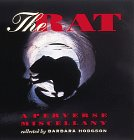
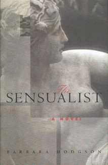
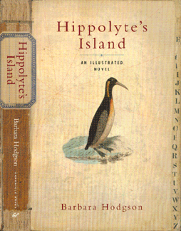
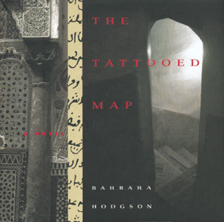
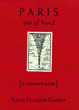
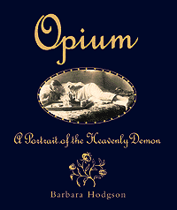

|
On Exhibit November 2001
Exhibit organized by Daniel J. Slive
Reading matter that reflects popular culture and records the history and marketing of printing has been collected by the Department since its inception fifty years ago. A collection of Tauchnitz editions, the first paperback series, are followed by yellow-back thrillers, dime novels, pulp magazines, paperbacks, and contemporary publishing in various genres. Other popular literature collections include American almanacs, English chapbooks, American hymnals, English and American broadside ballads, American songsters, and the Kurtzman Collection of Beat Literature.
Barbara Hodgson's work as a writer, photographer, and designer is part of this continuum. She is the author of the illustrated novels Hippolyte's Island, The Sensualist, and The Tattooed Map and the non-fiction compilations The Rat: A Perverse Miscellany and Opium: A Portrait of the Heavenly Demon. She also collaborated, with Karen Elizabeth Gordon and Nick Bantock, on a fictional guidebook entitled Paris out of hand.
In these works, Hodgson combines her writing with illustrations from a multitude of sources to guide readers through her imaginary worlds and non-fiction studies. The diverse imagery Hodgson employs represents a wide range of sources and illustration techniques including engravings, lithographs, photographs, stereo-cards, postcards, movie stills, and pulp magazine and novel covers. Combined with her texts, these illustrations provide the reader with various entry points into the author's fictional and non-fictional worlds.
In addition to her work as an author and designer, Hodgson is also the co-founder of Byzantium Books, a book packaging company dedicated to challenging the form of the book. She lectures at the Hammer Museum on November 18 on the topic "Dissecting the Making of a Book."
| Barbara Hodgson. The rat: a perverse miscellany. Berkeley: Ten Speed Press, 1997.
 In this compendium, Hodgson documents the interaction of rats and humans over thousands of years. In addition to facts and anecdotes about the rodent, the portrayal of rats in folklore, fables, novels, movies, and popular culture is explored. |
| Barbara Hodgson. The sensualist: a novel. San Francisco: Chronicle Books, 1998.
 The protagonist in The Sensualist is Helen Martin, a scholar of historical anatomical illustration. The narrative of her journey in Europe is also a story of self-examination and self-discovery. It is richly illustrated with many images from anatomical texts. |
| Barbara Hodgson. Hippolyte's Island. San Francisco: Chronicle Books, 2001.
 Hippolyte Webb is a traveler, writer, and natural historian whose next trip is to the Auroras, a group of tiny islands in the South Atlantic. The unusual aspect of this destination is that these islands have not been seen for two centuries. In her newest work of fiction, Hodgson writes of this journey and the relationship between Hippolyte, who wishes to prove the islands' existence, and his down-to-earth editor who wants to refute his claims. The work is illustrated with travel journals, maps, sketches, and specimens. |
| Barbara Hodgson. The tattooed map. San Francisco: Chronicle Books, 1995.
 In her first novel, Hodgson displays her fascination with the experience of travel to foreign lands. In the form of a daily journal, The tattooed map is a written and visual account of two travelers in Morocco. In addition to the text of the journal, the author includes reproductions of maps, photographs, illustrations, and ephemera picked up during the journey. Regarding her use of a variety of pictorial imagery in her work, Hodgson noted in an interview, "My world is very visual. Pictures are an important part of how we see the world, and objects that people collect, whether they're photos or bills or scraps of paper, are important indicators of what a person is like." |
Karen Elizabeth Gordon, in collaboration with Barbara Hodgson and Nick Bantock.
Paris out of hand. San Francisco: Chronicle Books, 1996.
|  An imaginary vade mecum to the city of Paris, Paris out of hand is based on travel guides from the late nineteenth and early twentieth centuries. Chapters include information found in traditional Baedekers such as hotels, nightlife and entertainment, restaurants and cafes, sights, stores, and transportation. The inclusion of rating guides, side notes, maps, and brief vocabularies throughout add to the impression of an actual guide. Complementing the text, images from a wide range of sources add a lively element to the work. In describing this vivid combination of image and text, a reviewer in the Columbus Dispatch wrote, "The book - cart-wheeling over so many issues of design, color, art history, stand-up comedy, and performance art that I must remind myself that is it a lo-and-behold book - provides a mischievous, faux travelogue of a brightly imagined Paris."
|
|  | Barbara Hodgson. Opium: a portrait of the heavenly demon. San Francisco: Chronicle Books, 1999.
In her illustrated history of opium and its place in modern culture, Hodgson describes the cultivation and creation of this narcotic in India and the Middle East and its consumption throughout history in Asia, Europe, and North America. In the chapter titled "The Writer's Muse," she explores the use of opium by authors as varied as Charles Baudelaire, Jean Cocteau, and Oscar Wilde. |
| UCLA Library Special Collections | UCLA Library | UCLA Home
Comments & suggestions to spec-coll@library.ucla.edu.
Last update: 06/07/2021 by Caroline Cubé
© 2001 by the Regents of the University of California. All rights reserved.